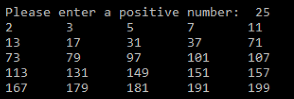

Calculate the first N emirp (prime, spelled backwards) numbers, where N is a positive number that the user provides as input. An Emirp is a prime number whose reversal is also a prime. For example, 17 is a prime and 71 is a prime, so 17 and 71 are emirps. Write a program that prints out the first N emirps, five on each line.

For this assignment, you are required to make use of 2 functions (which you must write).
isPrime(value) # Returns true if value is a prime number.
reverse (value) # Returns the reverse of the value (i.e. if value is 35, returns 53).
You should use these functions in conjunction with logic in your main part of the program, to perform the computation of N emirps and print them out according to the screenshot above. The general outline for main would be as follows:
Step 1: Ask user for positive number (input validation)
Step 2: Initialize a variable Test to 2
Step 3: While # emirps found is less than the input:
Call isPrime with Test, and call it again with reverse(Test). If both are prime, print and increment number of emirps found.
Test++
Hint - to reverse the number, turn it into a string and then reverse the string. Then turn it back into an int!